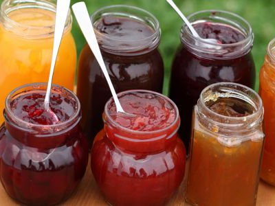

Existen distintas teorías acerca del origen etimológico del término mermelada. Así, hay quienes exponen que deriva de latín, concretamente de “melimelum”, que puede traducirse como “membrillo”. Una palabra esa que procede a su vez del griego, de la palabra “melimelon”, que es el resultado de la suma de dos componentes léxicos:
-El sustantivo “meli”, que significa “miel”.
-La palabra “melon”, que es sinónimo de “manzana”.
No obstante, otra teoría establece que mermelada proviene del persa “meba”, que era el nombre que utilizaban para referirse a un dulce líquido que se elaboraba a partir del membrillo. Teorías a las que se suman otras que indican que proceden de la expresión francesa “Marie malade” o incluso del portugués “marmelada”.
El término se emplea para aludir a la conserva que se prepara con azúcar y fruta cocida.
